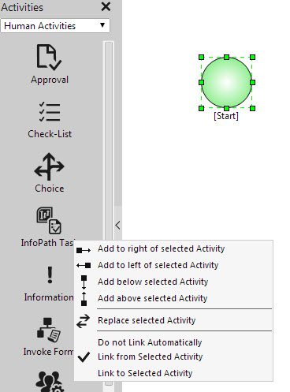

No
Setting Link Options in the AVEVA Work Tasks Activities Context Menu
When you add an activity using the options in the activities context menu, you can set the option for automatically linking the activity to the selected activity in the design mosaic.
To set the link property for automatic linking:
- Select an activity on the design mosaic with which you want to link the new activity.
- Next, right-click the icon of the new activity to be linked. This will display the context menu.

AVEVA Work Tasks activities context menu - In this menu, click the "Link from Selected Activity" option. This will display a check mark before the option to show selection.
- Right-click the activity icon again to display the context menu and select one of the Add Activity options, say "Add to right of selected Activity".
This will add the new activity to the right of the selected activity with a link from this activity to the new one.